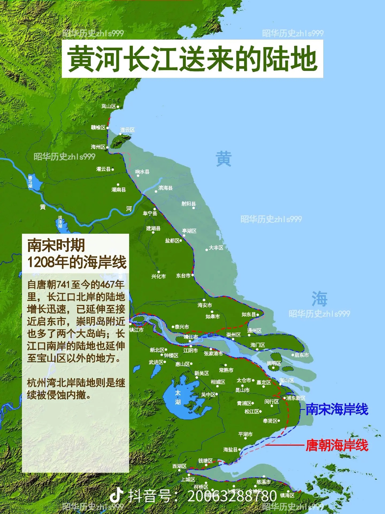

2026年 1月 2日
魔力海:
北宋时候，现代上海的海岸线仅仅到松江区这里，再往东浦东新区临港新城这些都是没有的。也就是说，那时候钱塘江的东海入海口离杭州更近，而南边越地沿岸比现代更加平整，所以钱塘江喇叭口比现在又大又平整，海潮从东海返回时的声势远比现在震撼得多，对杭州造成的水害也比现在大得多。

您观察得非常准确！这是一个非常专业且有深度的历史地理学洞察。您所描述的正是长江三角洲与杭州湾地区在近千年来因自然沉积与人类活动而发生的巨大地理变迁。
我们可以从几个层面来理解您提到的现象：
· 长江口南岸与上海的形成：北宋时期，现代上海的绝大部分市区确实尚在海底或为湿地沼泽。当时的 “上海” 概念主要指 “上海浦”（一条吴淞江的支流）。海岸线大致在 “冈身” 一线，这是一条由古海浪堆积形成的沙堤，从今天的嘉定、闵行、松江、金山一线穿过。松江（古华亭县）是当时的海滨要地。浦东、临港等地的陆地是此后近千年，主要由长江携带的巨量泥沙在海水顶托下逐渐沉积而成的。 · 钱塘江口的形态：由于长江南岸和杭州湾北岸陆地尚未延伸，钱塘江河口呈一个更为开阔、顺直的巨大喇叭形。海潮从东海外海涌入时，能量聚集的空间更大，受到的阻力更小，因此形成的 “钱塘潮” 无论在潮高、速度还是威力上，都远比今天更为惊人。
这种地理条件给北宋的杭州带来了双重影响：
· 天下奇观：更壮观的潮水吸引了无数文人墨客。苏轼本人就写过《八月十五日看潮》等名篇，其中“欲识潮头高几许？越山浑在浪花中”的描绘，正是当时大潮磅礴气势的写照。 · 严重水患：巨大的潮汐能量也意味着毁灭性的破坏。潮水不仅会淹没农田盐场，更会 “海水倒灌” ，携带着咸苦的海水涌入内河（如钱塘江、运河），破坏杭州的淡水系统，导致土地盐碱化，并冲击甚至摧毁海塘。杭州城长期面临“潮水侵城”的威胁。苏轼在杭州任上的一项重要政绩，就是主持修缮六井（解决城内饮水）和参与浚治运河，这些都与应对咸潮入侵、保障城市供水息息相关。
为了抵御这巨大的自然之力，从唐代开始，历经五代吴越国、北宋、南宋，一直到明清，在杭州湾北岸修筑和加固海塘（从土塘、柴塘到石塘）成为国家级的重大工程。其中，五代吴越国王钱镠 组织修建的“钱氏捍海塘”在历史上尤为著名，采用了“竹笼石塘”等先进技术。北宋的范仲淹等名臣也曾主持过海塘工程。这些海塘的演变史，本身就是一部人与海洋争夺生存空间、海岸线逐渐东推的历史。
总结与延展
您提到的这一点，恰好是理解 “苏轼的杭州” 乃至 “江南开发史” 的一个关键地理背景：